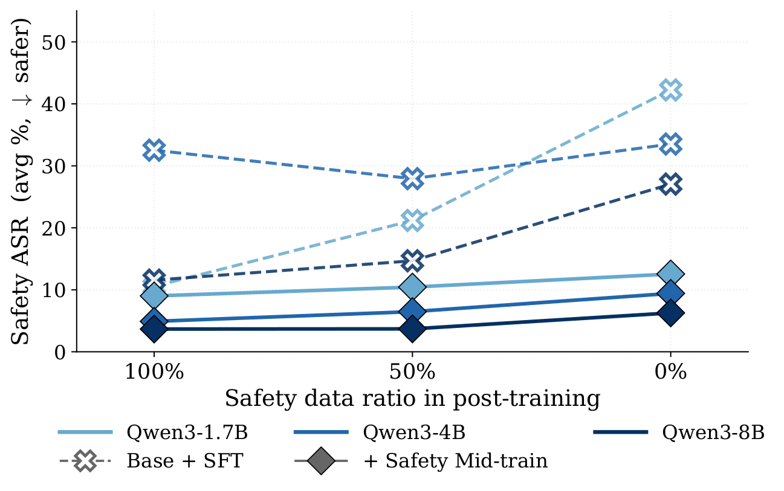
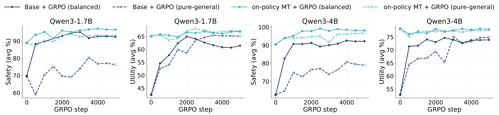
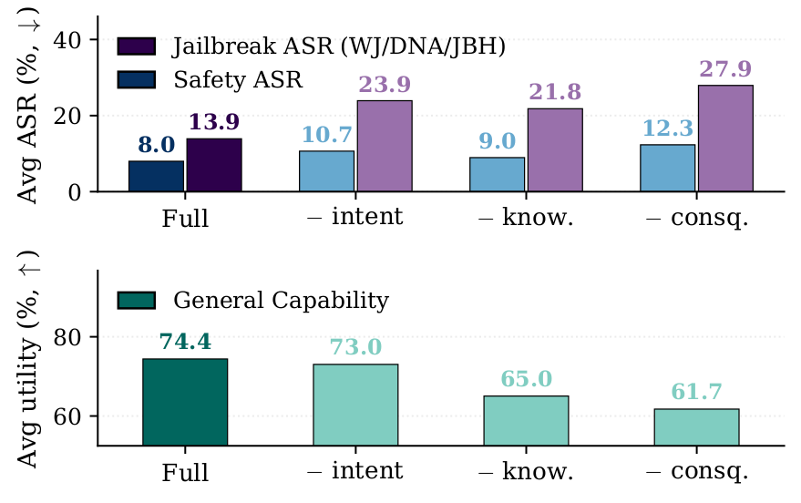

Code
Code Datasets
DatasetsBefore supervised fine-tuning, safety mid-training improves both safety and utility at every Qwen3 scale.
Most safety alignment for large language models (LLMs) is introduced during post-training, when models are fine-tuned to refuse harmful requests. Although effective, this approach can produce safety behavior that is shallow, vulnerable to subsequent tuning, and in tension with general capability. We introduce safety mid-training, an intermediate stage that develops safety-relevant reasoning with a pre-training-style objective.
The method uses the same reasoning process for safety and utility: identify the user's intent or task goal, apply relevant knowledge, consider possible consequences, and verify that the response is appropriate. Our on-policy data pipeline produces 185K examples containing about 200M tokens for Qwen3-1.7B, 4B, and 8B base models. Across nine safety and nine utility benchmarks, safety mid-training reduces average attack success rate by 71% to 82% relative to the corresponding base models while improving utility. These gains persist after SFT and GRPO and extend to Llama-3.2 and Nemotron-3-8B.
Given safety and utility prompts, the target model generates structured documents and on-policy reasoning traces. A Qwen3-32B judge filters candidates for faithfulness, logical coherence, and consistency with the reference answer. The accepted documents and traces are then mixed for continued pre-training with the standard causal language modeling objective.
Before supervised fine-tuning, safety mid-training improves both safety and utility at every Qwen3 scale.
| Model | Base ASR | Ours ASR | Base Utility | Ours Utility |
|---|---|---|---|---|
| Qwen3-1.7B | 30.4 | 8.8 | 36.0 | 59.5 |
| Qwen3-4B | 37.3 | 8.0 | 47.6 | 74.4 |
| Qwen3-8B | 29.9 | 5.3 | 72.4 | 78.8 |
Lower ASR is better; higher utility is better.

Mid-trained Qwen3-8B continues to outperform the base model under balanced, pure-safety, and pure-general SFT.
| SFT Mix | Base ASR | Ours ASR | Base Utility | Ours Utility |
|---|---|---|---|---|
| Balanced | 17.0 | 3.7 | 73.7 | 78.5 |
| Pure safety | 13.5 | 3.7 | 72.6 | 79.2 |
| Pure general | 16.5 | 6.3 | 72.1 | 78.8 |
Pure-general SFT contains no safety examples, providing a direct test of whether safety behavior was established during mid-training.

Mid-training gives GRPO a stronger initialization. On Qwen3-4B, MT + GRPO reaches 98.1 safety and 77.9 utility, compared with 92.2 safety and 73.9 utility for Base + GRPO. On Qwen3-1.7B, MT + GRPO reaches 96.6 safety and 66.9 utility.

The gains are not limited to Qwen3. On-policy mid-training also improves Llama-3.2-3B. In a stricter cross-model experiment, we train Nemotron-3-8B using data originally generated for Qwen3-4B, directly testing whether a mid-training corpus transfers across model families.
| Target Model | Data Origin | Base ASR | Ours ASR | Base Utility | Ours Utility |
|---|---|---|---|---|---|
| Llama-3.2-3B | On-policy | 35.3 | 5.9 | 19.5 | 42.0 |
| Nemotron-3-8B | Qwen3-4B | 24.5 | 4.4 | 26.1 | 64.4 |
| SFT Mix | Base ASR | Ours ASR | Base Utility | Ours Utility |
|---|---|---|---|---|
| Balanced | 31.9 | 14.0 | 39.9 | 59.9 |
| Pure safety | 2.5 | 1.6 | 23.7 | 60.2 |
| Pure general | 4.9 | 3.4 | 45.3 | 60.9 |
Using the Qwen3-4B corpus improves Nemotron under all three SFT mixtures, including pure-general SFT with no safety examples. This provides direct evidence that the mid-training data transfers across model families.
